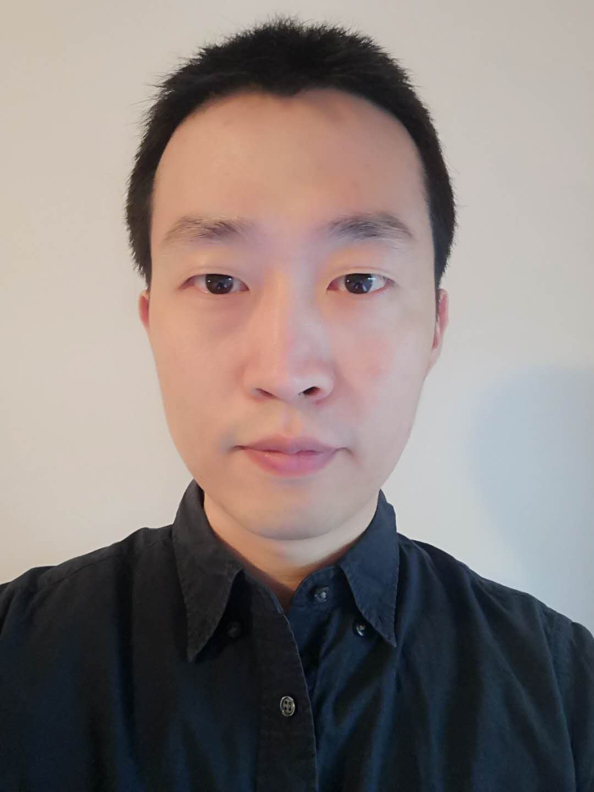

|  | Xuhao ChenPostdoctoral Research AssociateComputer Science & Artificial Intelligence Laboratory (CSAIL)Massachusetts Institute of TechnologyRoom 32-G885, CSAIL, MIT32 Vassar St, Cambridge, MA, 02139
|
I am a Postdoctoral Research Associate at Computer Science & Artificial Intelligence Lab of Massachusetts Institute of Technology, working with Prof. Arvind. I work on parallel computing and computer architecture, with an emphasis on massively parallel accelerators. My recent work focuses on efficient processing of pattern mining and machine learning on graphs. I received my Ph.D. degree in Computer Science from National University of Defense Technology (NUDT) in Dec. 2014. Before joining MIT, I was a research fellow working with Prof. Keshav Pingali in the Intelligent Software Systems group at University of Texas at Austin from Jan. 2019 to Aug. 2020. Before that, I spent two years (from Oct. 2012 to Oct. 2014) as a visiting Ph.D. student working with Prof. Wen-Mei Hwu in the IMPACT Research group at University of Illinois Urbana-Champaign.